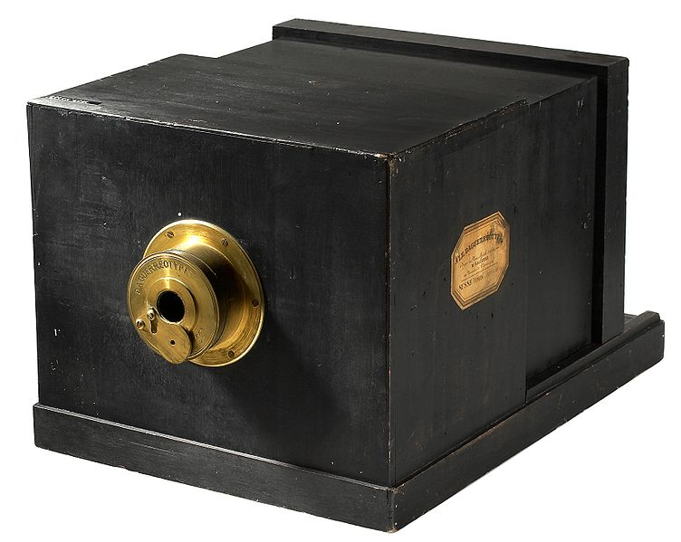
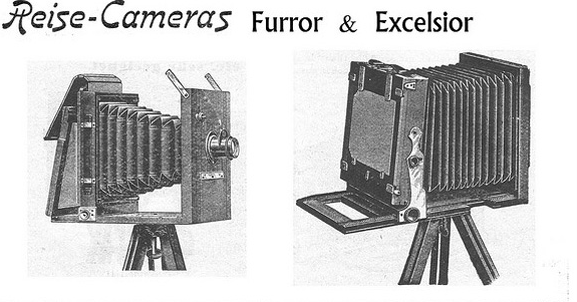
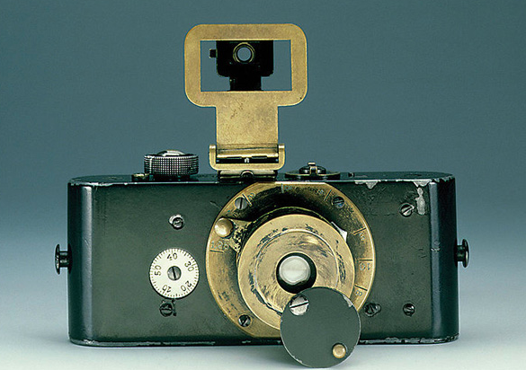

The Daguerreotype Camera was announced by the French Academy of Sciences. One of these inventions is now the world’s most expensive cameras.

Year:1900
The Raisecamera (travel camera) was invented. Extreme light weight and small dimensions when it is folded made this photo camera the most desirable thing for landscape photographers.

Year:1914
The first 35mm still camera (also called candid camera ) developed by Oskar Barnack of German Leica Camera. Later it became the standard for all film cameras.

Year:1978
Konica introduces the first point-and-shoot, autofocus camera Konica C35 AF. It was named “Jasupin”.